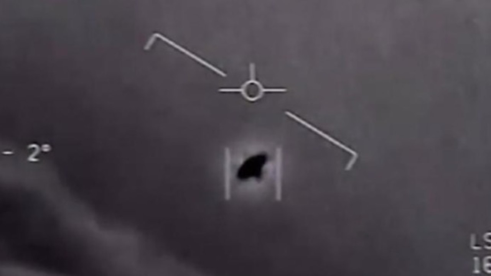
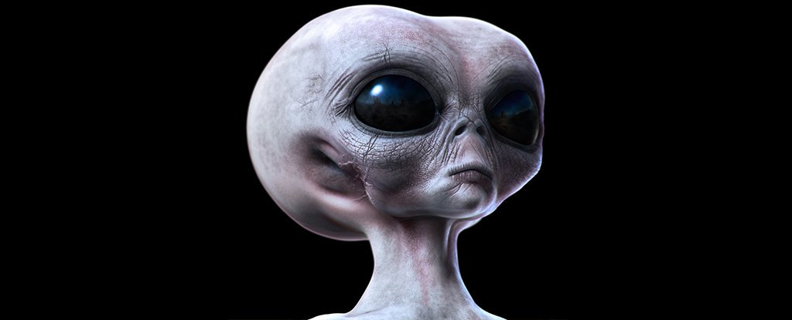

A L I E N S

Welcome, below is a short paragraph, please be patient and finish reading if your interested, thank you for your cooperation.
Do you believe in aliens? Some people do and some people don’t, there are many theories about aliens, but there’s still no evidence to prove that they actually exist. Aliens are hypothetical life that may occur outside of Earth and which might not be living on Earth. Aliens can be anything, such as mermaid, green men, or any other creatures. It is very likely to find aliens on Earth and it may be among us. Scientists predict that they will find aliens in 2040. Some people believed that aliens can be whatever we want them to be or what they wanted to be themselves.
Scientists got a picture from the satellites that might be an UFO

The NASA program is trying to find life on other planets, and it will take time. They believe that finding like in other planets has to do with rainbows. They will analyze lights that shot by a star through the atmosphere from a distant planet. One way they use to find life in other planets is that they have a bar code that shows the burning of hydrocarbons from another planet. An MIT professor, Sara Seager decided to come up with a roster of possible chemical combinations that could help them know if there is life living on other planets. According to William Borucki, a NASA investigator said: “If we find lots of planets like ours…. We’ll know it’s likely that we aren’t alone, and that someday we might be able to join other intelligent life in the universe”.
Aliens might look like this:

Or even this...
Or that...
About the authors:
This website is created by Selina and Sophia, we are 7 graders from Kaohsiung American School. We are very interested in unknown creatures such as aliens, so we have decided to make this website about aliens to let other people know more about aliens that might exist on our or on other planets.